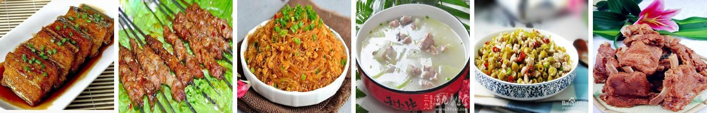
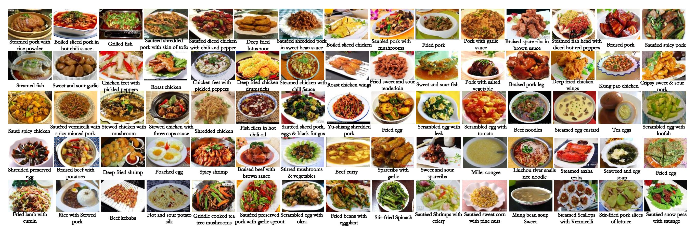
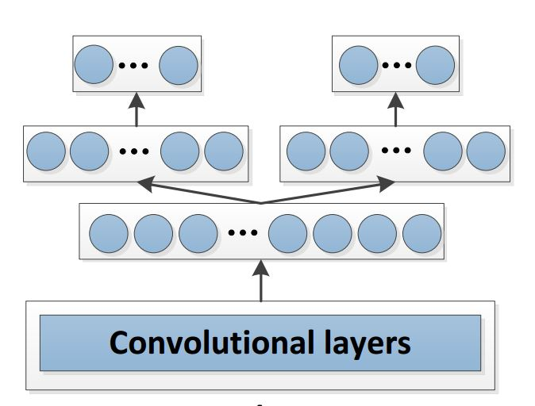
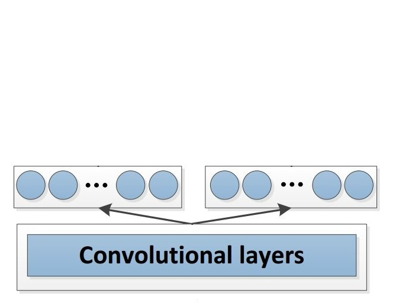

Categorization and Ingredients Recognition
for Chinese Food
Chenhao Wang, Mengfan Wang, Yao Xiao, Yuxian YeFall 2017 ECE 5554/4554 Computer Vision: Class Project
Virginia Tech
Abstract
One or two sentences on the motivation behind the problem you are solving. One or two sentences describing the approach you took. One or two sentences on the main result you obtained.Introduction
Chinese food and it's ingredients are hard to be recognized for several reasons. Firstly, some ingredients are difficult to be recognized, for example, ingredients under soup or sauce. Secondly, they are invisible in flour-made food categories such as dumpling and noodle. Thirdly, many ingredients exhibit large visual variations due to different ways of cutting and cooking. For example, Figure 1 shows six dishes of Chinese food all with pork, though they look totally different. Hence, combing food categorization and ingredients recognition is regarded as a useful method to improve the accuracy.

Figure 1: Different dishes of Chinese food all with pork.
Approach
Dataset: Vireo 172
Chen J. and her group [1] constructed a Chinese food database: Vireo 172, consisting of 172 categories of food and 110,000 images. It also contains 353 different ingredients labels for each image. All the images in the dataset were crawled from Baidu and Google image search. The names of food categories, were issued as keywords in Chinese to search engines, and 1,300 images are crawled per food category. Figure 2 shows a part of food categories and the corresponding image.

Figure 2: 75 kinds of food categories and the corresponding image.
Figure 2: 75 kinds of food categories and the corresponding image.
CNN Model Architecture Design
Two CNN models, VGG16[3] and Resnet152[4], are implemented and compared. It's a multiple output task because of the combination of food categorization and ingredients recognition. As a result, the original architecture of VGG16 and Resnet152 need to be modified to apply this case. In terms of design, the major modification is made on the fully connected layers. For VGG16, the two tasks share the first fc layers and own two privately layers. There are 4,096 neurons for food categorization, and 1024 neurons for ingredient[1]. For Resnet152, because there is only one fc layer, so the two output is connected to the convolution layers (and avg pool) directly.


Figure 3: The modified architecture of VGG16 and Resnet152.
Figure 3: The modified architecture of VGG16 and Resnet152.
Experiments and results
Provide details about the experimental set up (number of images/videos, number of datasets you experimented with, train/test split if you used machine learning algorithms, etc.). Describe the evaluation metrics you used to evaluate how well your approach is working. Include clear figures and tables, as well as illustrative qualitative examples if appropriate. Be sure to include obvious baselines to see if your approach is doing better than a naive approach (e.g. for classification accuracy, how well would a classifier do that made random decisions?). Also discuss any parameters of your algorithms, and tell us how you set the values of those parameters. You can also show us how the performance varies as you change those parameter values. Be sure to discuss any trends you see in your results, and explain why these trends make sense. Are the results as expected? Why?
Qualitative results
Show several visual examples of inputs/outputs of your system (success cases and failures) that help us better understand your approach.
References
[1] Chen, J., & Ngo, C. W. (2016, October). Deep-based ingredient recognition for cooking recipe retrieval. In Proceedings of the 2016 ACM on Multimedia Conference (pp. 32-41). ACM.[2] Salvador, A., Hynes, N., Aytar, Y., Marin, J., Ofli, F., Weber, I., & Torralba, A. (2017). Learning cross-modal embeddings for cooking recipes and food images. In CVPR , (pp. 619-508).
[3] Simonyan, K., & Zisserman, A. (2014). Very deep convolutional networks for large-scale image recognition. arXiv preprint arXiv:1409.1556.
[4] He, K., Zhang, X., Ren, S., & Sun, J. (2016). Deep residual learning for image recognition. In CVPR (pp. 770-778).
GitHub link: https://github.com/wang120332076/cv_project